Casual Chic
Um vestido leve e elegante, perfeito para dias quentes. A estampa discreta e os acessórios em tons neutros deixam o visual moderno e fácil de combinar.
 Moda com Propósito
Moda com Propósito
Descubra combinações elegantes e femininas para diferentes ocasiões, valorizando sua personalidade, estilo e autenticidade.
Conforto, leveza e estilo para o dia a dia.
Um vestido leve e elegante, perfeito para dias quentes. A estampa discreta e os acessórios em tons neutros deixam o visual moderno e fácil de combinar.
/galeria_de_fotos/casual_moderno.png)
Uma combinação prática e atual para quem deseja conforto sem abrir mão da elegância.
/galeria_de_fotos/casual_confortavel.png)
Peças leves e confortáveis que criam um visual descontraído para momentos de lazer.
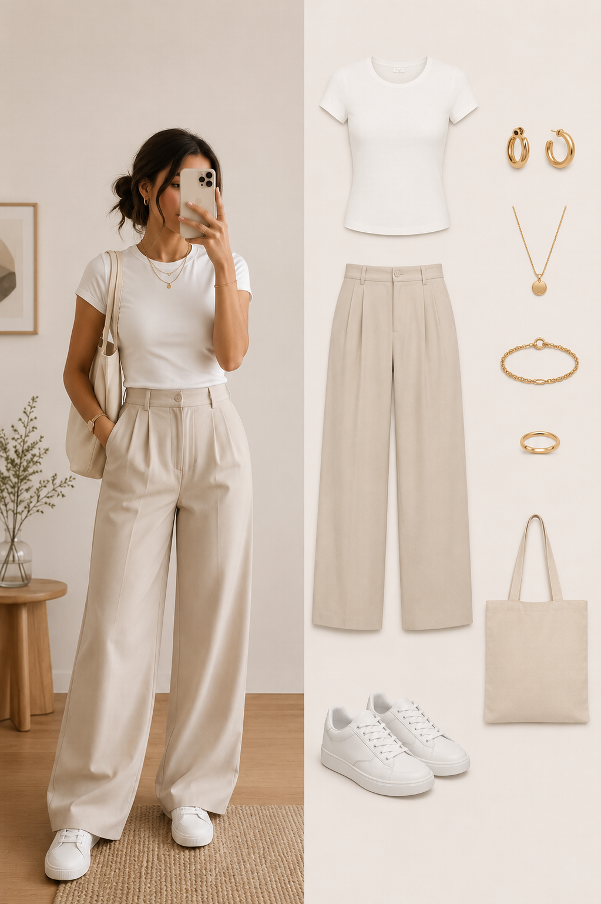
Tons neutros formam uma composição versátil, delicada e fácil de combinar.
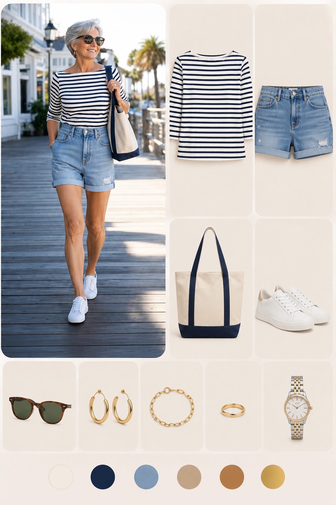
Uma proposta delicada que valoriza a feminilidade sem perder a praticidade.
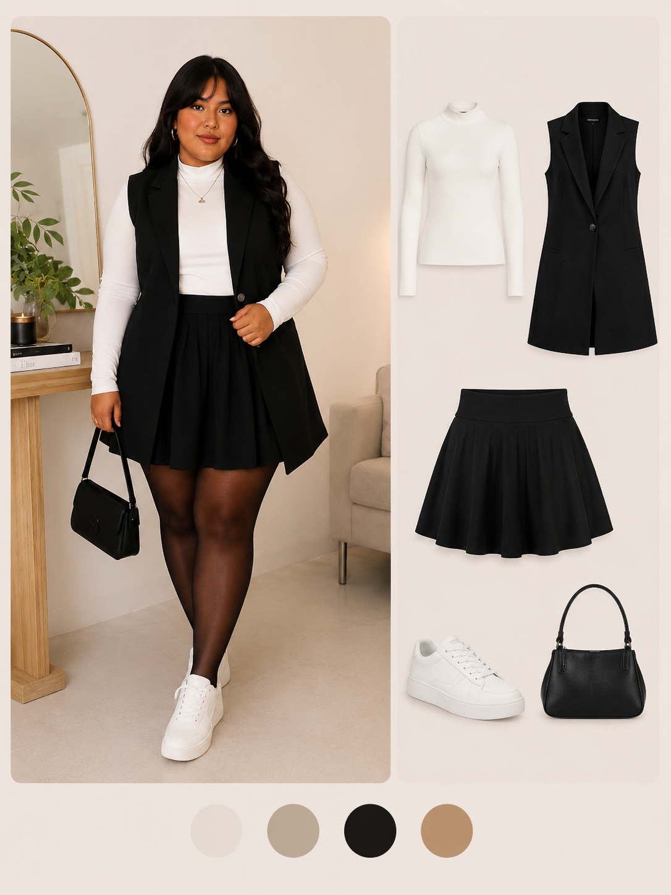
O equilíbrio entre simplicidade e sofisticação para um visual elegante no cotidiano.
Sofisticação e feminilidade para momentos especiais.

Blazer em tom claro combinado com blusa delicada e calça de alfaiataria. Ideal para ocasiões formais.
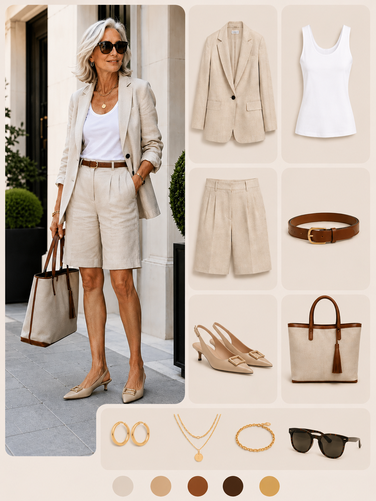
Uma composição contemporânea que combina peças sofisticadas com elementos modernos.

Uma escolha refinada para quem deseja transmitir confiança, delicadeza e presença.

Cores neutras criam um visual discreto, sofisticado e atemporal.
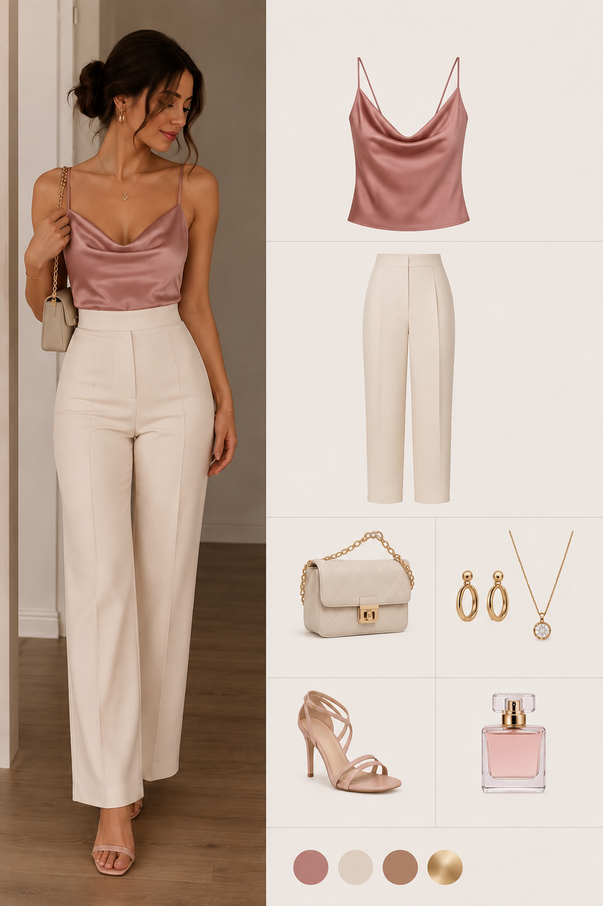
Peças suaves e femininas para ocasiões que pedem um visual elegante e delicado.
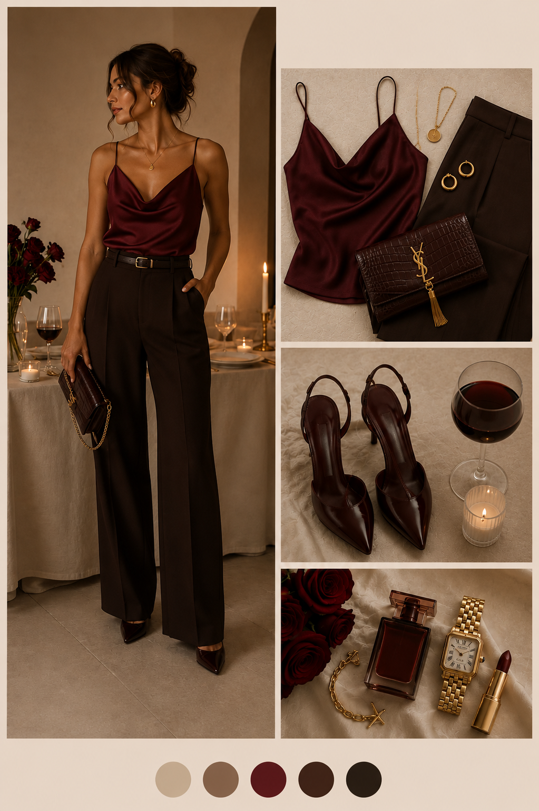
Uma produção sofisticada para eventos e momentos especiais durante a noite.
Profissionalismo, confiança e elegância em equilíbrio.
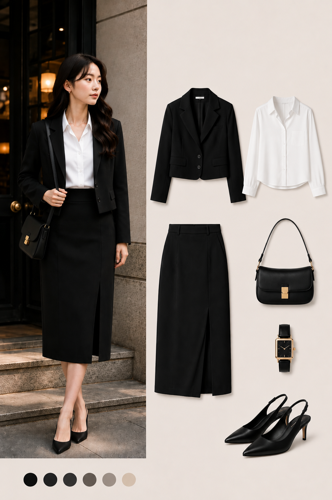
Conjunto de alfaiataria cinza com camisa branca, ideal para transmitir confiança e profissionalismo.

Uma combinação delicada e profissional para ambientes corporativos.
/galeria_de_fotos/alafataria_moderna.jpg)
Peças de alfaiataria com corte moderno para um visual profissional e atual.

Uma produção sofisticada e confortável para a rotina profissional.

Uma composição limpa e elegante para quem prefere praticidade no ambiente profissional.
/galeria_de_fotos/trabalho_reunião.jpg)
Uma escolha sofisticada para reuniões, apresentações e compromissos profissionais.
Produções especiais para celebrar momentos inesquecíveis.
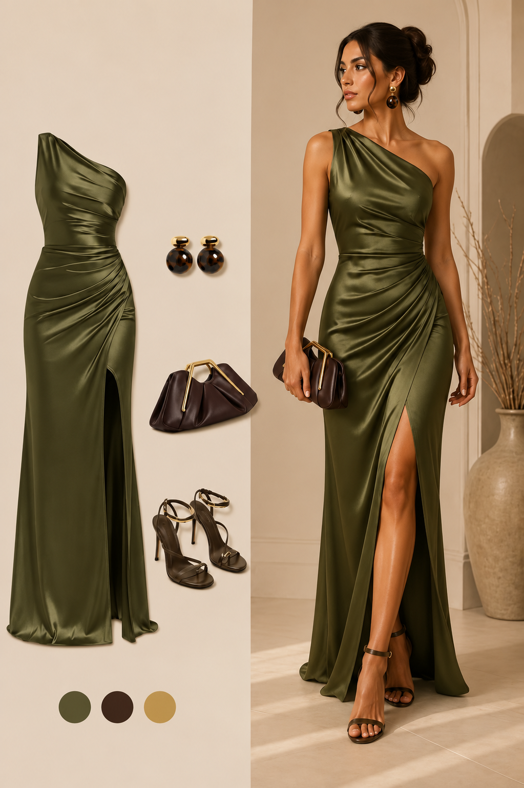
Vestido longo verde-oliva acetinado, uma presença sofisticada e marcante, que transmite confiança, elegância e um toque de mistério.
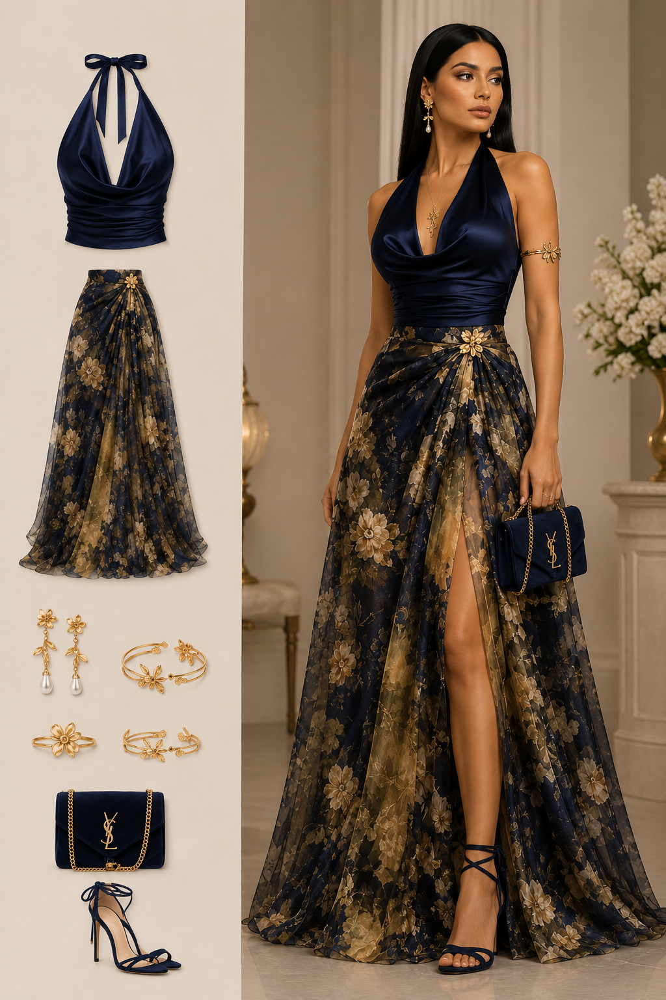
Uma produção marcante para eventos durante a noite, equilibrando elegância e glamour.
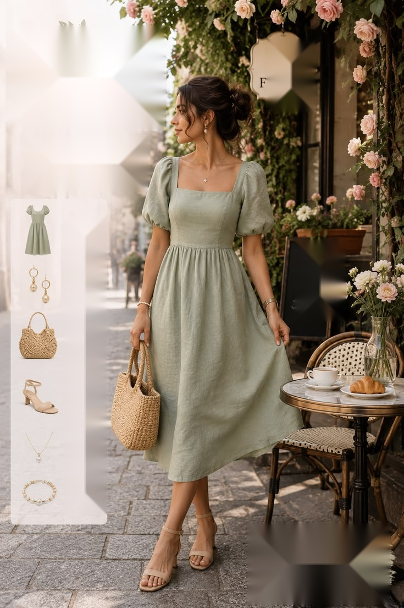
Uma proposta delicada para celebrações especiais e momentos marcantes.

Uma composição sofisticada para casamentos e eventos sociais.
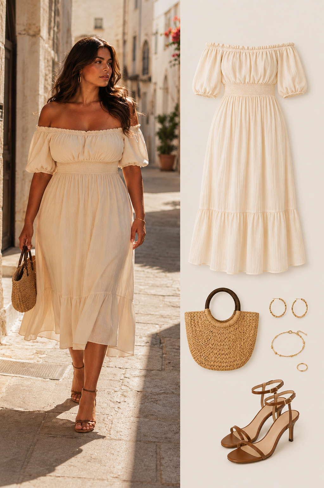
Look leve e elegante para festas durante o dia e eventos ao ar livre.
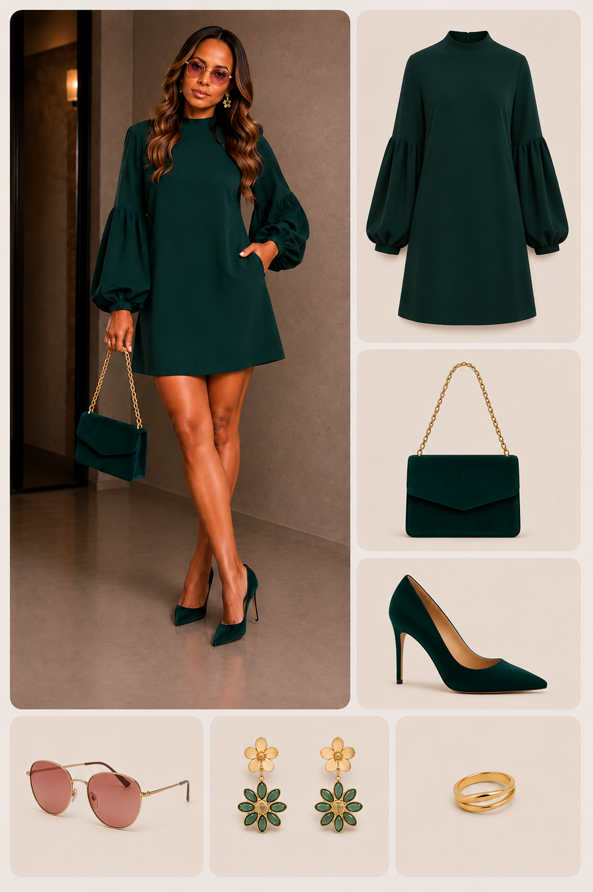
Produção mais curta e refinada, ideal para eventos sociais e recepções.
Delicadeza, feminilidade e suavidade em cada detalhe.

Suéter de tricô rosa-claro combinado com saia midi em tom creme, criando um visual delicado.
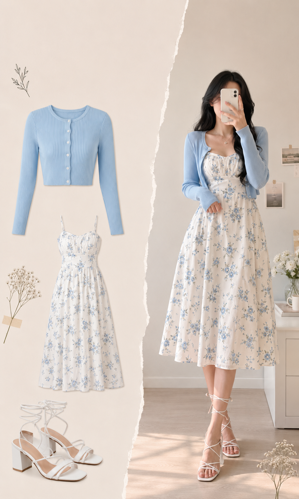
Estampas florais e tecidos leves criam uma composição feminina e encantadora.

Feminilidade e elegância combinadas em uma produção suave e sofisticada.

Uma combinação atemporal para quem aprecia peças delicadas e femininas.

Delicadeza e conforto unidos em uma produção leve para o cotidiano.

Uma interpretação contemporânea do estilo romântico, com leveza e personalidade.
Simplicidade, equilíbrio e elegância atemporal.

Conjunto de blusa transpassada verde-oliva e calça pantalona bege em tons terrosos.
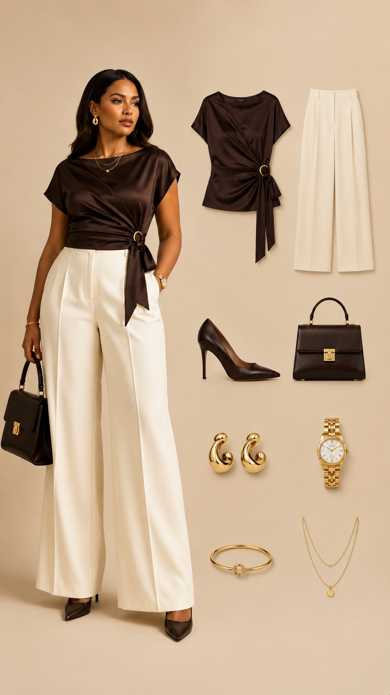
Uma composição simples que demonstra como poucos elementos podem transmitir sofisticação.

Peças de linhas simples para um visual contemporâneo e equilibrado.

Uma única paleta de cores cria um visual harmonioso, sofisticado e atemporal.

Conforto e simplicidade para uma produção prática e elegante no dia a dia.

Uma proposta refinada que valoriza cortes, proporções e tons discretos.